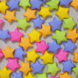

Buy translucent wax paper suitable for making kites and sun catchers (also called window stars). Wax paper are sold in batches of 100 sheets in 11 different colors. Two sizes available (6" and 20")
Papers Used For Origami
| Moravian Star Paper Buy pre-cut strips of paper suitable for making Moravian Stars. Strips are 22" long and come in 5 widths (3/8", 1/2" , 5/8" , or 3/4" or 1" wide_. Comes in variety pack of colors, or in single-color packs. Choice of regular, "pearlescent", vellum, double-sided, or fade. |
| Lucky Heart Paper Buy pre-cut strips of paper suitable for making Lucky Hearts. Paper strips are 1" x 5.5" and can be made into Lucky Hearts that are 1" wide. |
|
|
Translucent Wax Paper Buy translucent wax paper suitable for making kites and sun catchers (also called window stars). Wax paper are sold in batches of 100 sheets in 11 different colors. Two sizes available (6" and 20") |
| Moravian Stars Buy already made Moravian Stars. Moravian Stars come in a variety of colors: they can be of a single color or have two different colors. Comes in packs of 9 or 10 stars per pack. Typically $1 to $1.25 per star. |
|  | Lucky Stars Buy already made Lucky Stars. Lucky Stars come in a variety of colors and are 100 stars per pack. Limited supplies available. Shown are samples but you will need to send email to inquire on availability. |
| Heart-Shaped & Star-Shaped Containers Need a place to store those Lucky Stars? Buy a heart-shaped, star-shaped, or pillow-shaped container for your stars. The containers will complete your gift. |
Folded-Book Art StoreOrder personalized Folded-Book Sculptures. Artwork may contain letters, numbers, symbols or logos. Individually made at time of order and crafted with precision. |